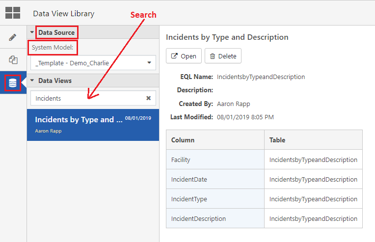

In the Data Views Library, you can search for or browse previously saved Data Views, where they can be either opened for editing or deleted.
Users (even those in the Administrators group) must be in the package role 'DataViewCreateAndEdit' to create Data Views and access the Data Views Library.
To open the Data Views Library, from the sidebar, click the Data Library icon. All Data Views saved in your system are listed in descending order of the date they were created or last modified.
Users with access to both Environmental and Ergonomics tables can switch between them using the Data Source drop down.
Users with access to more than one system can switch between them using the System Model drop down, which will load the saved Data Views for that system.
To search for a Data View by name, use the search box. Searches will run automatically as you type.
Click on a Data View to bring up information about the EQL Name, Description, Creator, date it was last modified, and a table listing the EQL columns being used. Click Open to automatically open the Data View in the Query Editor or click Delete to delete the data view.
When opened, the query will appear in either the Visual Editor or the EQL Editor, depending on which editor was active when it was last saved. In addition, the result section will be set to either the Table or Chart view type depending on which type was active when the Data View was last saved.

Unlike the Query Library, in the Data View Library, the 'Table' column will only display the EQL Name for the selected Data View.